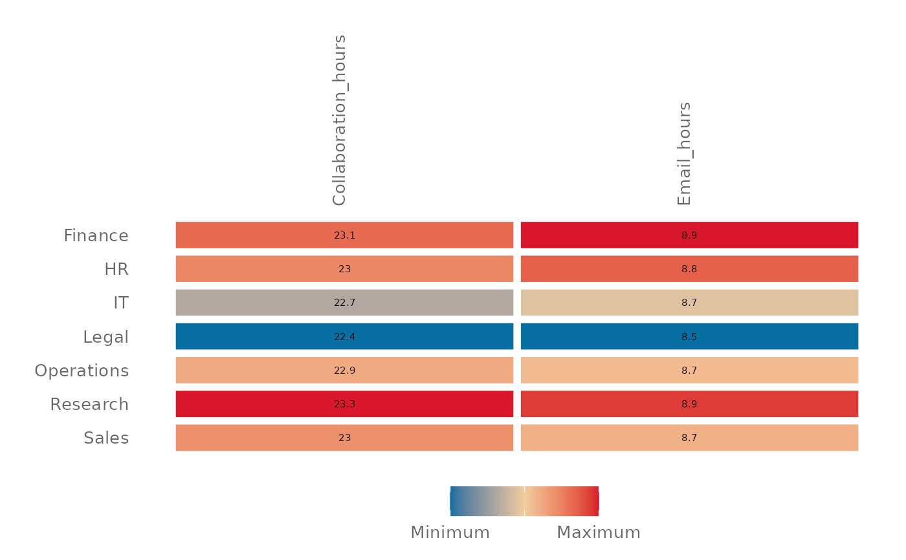

Run a summary of Key Metrics without aggregation
Source:R/keymetrics_scan_asis.R
keymetrics_scan_asis.RdReturn a heatmapped table directly from the aggregated / summarised data.
Unlike keymetrics_scan() which performs a person-level aggregation, there
is no calculation for keymetrics_scan_asis() and the values are rendered as
they are passed into the function.
Arguments
- data
data frame containing data to plot. It is recommended to provide data in a 'long' table format where one grouping column forms the rows, a second column forms the columns, and a third numeric columns forms the
- row_var
String containing name of the grouping variable that will form the rows of the heatmapped table.
- col_var
String containing name of the grouping variable that will form the columns of the heatmapped table.
- group_var
String containing name of the grouping variable by which heatmapping would apply. Defaults to
col_var.- value_var
String containing name of the value variable that will form the values of the heatmapped table. Defaults to
"value".- title
Title of the plot.
- subtitle
Subtitle of the plot.
- caption
Caption of the plot.
- ylab
Y-axis label for the plot (group axis)
- xlab
X-axis label of the plot (bar axis).
- rounding
Numeric value to specify number of digits to show in data labels
- low
String specifying colour code to use for low-value metrics. Arguments are passed directly to
ggplot2::scale_fill_gradient2().- mid
String specifying colour code to use for mid-value metrics. Arguments are passed directly to
ggplot2::scale_fill_gradient2().- high
String specifying colour code to use for high-value metrics. Arguments are passed directly to
ggplot2::scale_fill_gradient2().- textsize
A numeric value specifying the text size to show in the plot.
Examples
library(dplyr)
# Compute summary table
out_df <-
pq_data %>%
group_by(Organization) %>%
summarise(
across(
.cols = c(
Email_hours,
Collaboration_hours
),
.fns = ~median(., na.rm = TRUE)
),
.groups = "drop"
) %>%
tidyr::pivot_longer(
cols = c("Email_hours", "Collaboration_hours"),
names_to = "metrics"
)
keymetrics_scan_asis(
data = out_df,
col_var = "metrics",
row_var = "Organization"
)
# Show data the other way round
keymetrics_scan_asis(
data = out_df,
col_var = "Organization",
row_var = "metrics",
group_var = "metrics"
)
